行程总览
每日详细行程
从武汉出发，一路向西，穿越河西走廊，环游北疆，最后从兰州飞回
出发！武汉 → 西安（G70福银高速）
新疆自驾之旅正式启程！清晨从武汉出发，沿G70福银高速一路向西北。
- 建议出发时间：5:30左右（越早越好，避开早高峰+多留白天时间）
- 路线：武汉 → 孝感 → 十堰 → 安康 → 西安
- 途经：秦岭隧道群（穿越秦岭山脉，隧道多注意安全）
- 每2-3小时必须休息：服务区停车、让宝宝活动、上厕所
- 傍晚到达西安附近：寻找安全的停车场或服务区车内过夜
车内宿营准备
- 第一晚在车里过夜，提前熟悉车内空间布局
- 遮阳帘/遮光帘拉好，保证隐私和睡眠质量
- 睡袋、保暖毯子准备好（9月底陕西夜间约15-18°C）
- 晚餐可在服务区解决或自备干粮
路程较长（850km），务必前一天晚上保证充足睡眠。带好宝宝的水、零食、玩具、尿不湿等必需品。检查车辆油量、胎压、备胎情况。G70高速秦岭段弯道和隧道较多，控制车速。
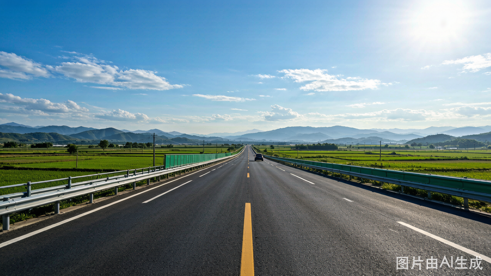
全天赶路 · G30连霍高速穿越陇东
今天是纯赶路的一天！沿G30连霍高速一路向西，穿越陕西、甘肃东部。
- 路线：西安 → 宝鸡 → 天水 → 兰州(绕城过黄河，不下高速！) → 武威
- 景观变化：关中平原 → 陇东黄土高原 → 河西走廊东端
- 建议出发时间：凌晨4-5点（带宝宝越早越好，宝宝车里睡回笼觉）
- 关于兰州：今天路过兰州时绝不下高速绕城！为D14预留时间——D14从张掖到兰州只有500km，中午就能到办托运！
- 傍晚到达武威：河西走廊四郡之一，找服务区或安全地点车内宿营
翻越乌鞘岭（三大高原交汇处）时可远眺祁连山雪山；进入河西走廊后视野豁然开朗，戈壁荒漠的壮阔感扑面而来。
950km是很长的距离。凌晨出发的好处是宝宝能在车上睡回笼觉。每3小时必须进服务区休息：让宝宝跑一跑、换尿不湿、吃点东西。准备好充足的零食和水。
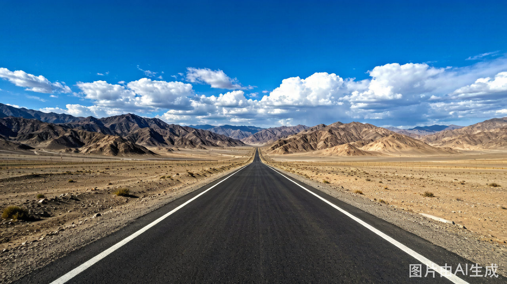
全天G30高速 · 穿越河西走廊 · 进入新疆！
今天是激动人心的一天——正式进入新疆！全程沿G30连霍高速一路向西。
- 路线：武威 → 张掖(高速路过，远眺七彩丹霞山体不停车) → 酒泉(路过) → 嘉峪关(远处可见关楼轮廓，不停车) → 玉门 → 瓜州 → 星星峡(新甘交界！) → 哈密
- 建议出发时间：凌晨4-5点
- 景观：戈壁滩、雅丹地貌、风电群（非常壮观！）、一望无际的荒凉美
- 星星峡：甘肃和新疆的交界处，经过这里就正式入疆了！拍照留念📸
- 新疆检查站：备好身份证，所有乘客都需要出示
- 傍晚到达哈密：新疆东大门，哈密瓜的故乡！
虽然今天不停车游玩张掖/嘉峪关/敦煌方向，但G30沿途的风景本身就是一种体验：远眺张掖丹霞的彩色山体、远处嘉峪关关楼的剪影、瓜州巨大的风力发电阵（白色风车铺满戈壁，超级震撼）、星星峡"新疆欢迎你"的路牌——这些都值得在车上好好欣赏和拍照！
- 张掖七彩丹霞：G30高速上远眺左侧彩色山体，不用进景区也能感受壮观
- 嘉峪关关城：高速上远处可见关楼轮廓
- 敦煌方向：从瓜州可以看到通往敦煌的岔路标识（下次专程来！）
- 瓜州风电场：数百座白色风力发电机铺满戈壁，航拍级别的大片风光
① 全程限速严格，很多区间测速；② 加油站需刷身份证+人脸识别；③ 检查站较多配合安检即可；④ 部分路段无信号提前下载离线地图；⑤ 备好身份证随时查验。
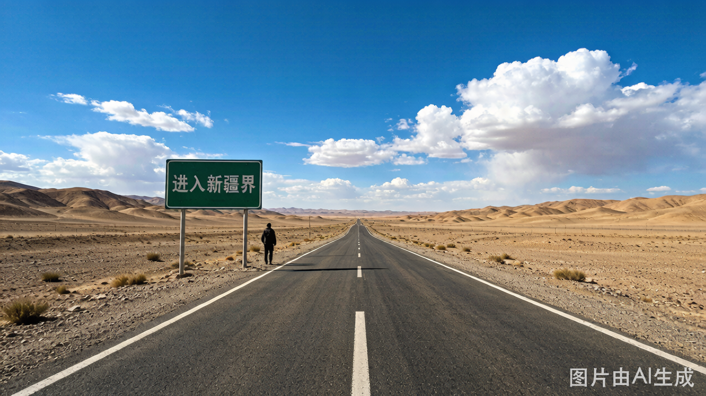
哈密 → 吐鲁番 → 乌鲁木齐
今天相对轻松！只有580km，下午就能到乌鲁木齐了。
- 路线：哈密 → 鄯善 → 吐鲁番(可短暂停留吃葡萄/买瓜) → 乌鲁木齐
- 吐鲁番可选停留：如果时间充裕，可在吐鲁番服务区或市区短暂停留，尝尝正宗的哈密瓜和葡萄（9月底还有晚季葡萄）
- 火焰山：G30高速上可远眺火焰山的红色山体，不用专门进去
- 下午到达乌鲁木齐：新疆首府！终于到了！
- 时差说明：新疆实际使用北京时间，但当地人生活节奏晚2小时（相当于"北京时间"的下午2点才是当地午餐时间）
下午 & 晚上 · 乌鲁木齐休整
到达乌鲁木齐后，先找地方安顿下来（推荐红山公园附近或大型商场停车场车内过夜），然后：
- 国际大巴扎：逛夜市、采购物资！烤羊肉串、手抓饭、馕、坚果干果
- 补充补给（重要！）：接下来进北疆有些地方补给不便
- 大量饮用水和零食
- 方便食品（泡面、自热锅）
- 水果蔬菜
- 保暖衣物（北疆夜间温度低）
- 满油！（北疆加油站间隔较远）
- 车辆整备：检查车况、胎压、油液
- 加油站注意：新疆加油站需刷身份证+人脸识别，进出都要安检
国际大巴扎
乌鲁木齐地标性打卡地，购物天堂+美食聚集地，感受浓郁的西域风情
大巴扎人多拥挤，看好宝宝；新疆饮食偏咸辣，给宝宝备些清淡食物；乌市早晚温差大注意添衣；时差原因当地晚餐时间很晚（21:00-22:00才天黑），按宝宝作息安排休息。
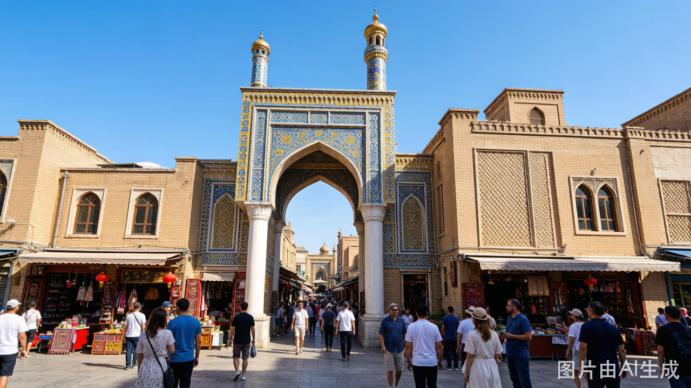
S21沙漠公路 —— 穿越古尔班通古特沙漠
今天的重头戏是S21阿乌高速公路——中国最美沙漠公路之一，穿越古尔班通古特沙漠，直奔北疆！
- 路线：乌鲁木齐 → S21沙漠公路(穿越古尔班通古特沙漠) → 福海 → 布尔津
- S21特色：笔直的公路延伸到天际线尽头，两边是无垠的沙丘和荒漠，非常壮观震撼
- 沿途风景：沙漠、戈壁、偶尔出现的骆驼群和野生动物（野马、羚羊）
- 服务区：沿途有服务区可停车拍照/加油/上厕所
- 傍晚到达布尔津：充满俄罗斯风情的边境小城
晚上 · 布尔津俄式风情小城
到达布尔津后感受这座色彩鲜艳的边境小城。
- 建筑风格：俄罗斯式彩色房屋，很有异域风情
- 河堤夜市：布尔津特色！吃冷水鱼（狗鱼、五道黑）——强烈推荐！
- 喀纳斯塔桥：网红打卡点，夜晚亮灯很漂亮
- 带娃Tips：河堤夜市热闹但不拥挤，适合遛娃；冷水鱼肉质细刺少适合宝宝
S21沙漠公路
"穿越古尔班通古特沙漠的景观大道"，笔直公路延伸至天际，无人区摄影绝佳
从今天起进入北疆大环线核心段了！S21沙漠公路是进北疆的最佳路线——比走老路节省大量时间，沿途风景也丝毫不打折。建议多留些照片和视频素材，这段路的视觉冲击力很强。
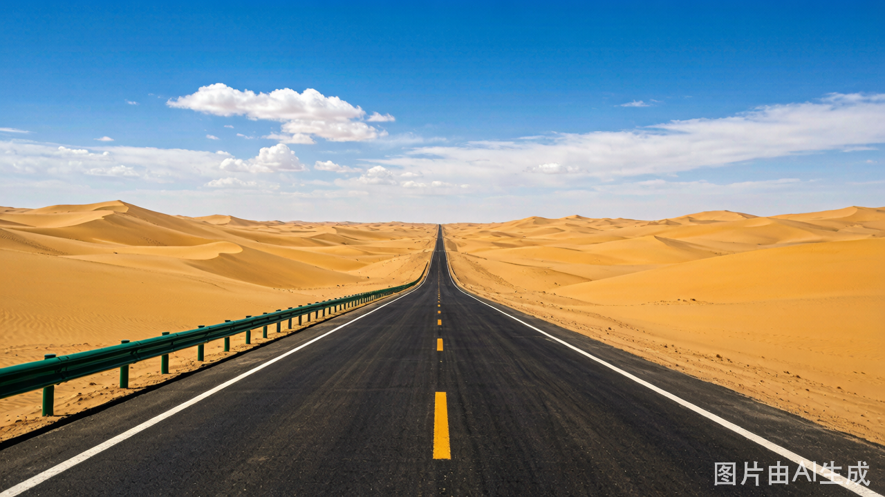
禾木村 —— "神的自留地" ⭐⭐⭐⭐⭐
今天是短途轻松的一天！只有150km，上午悠闲出发，下午就能到达禾木村——图瓦人聚居的古村落，被誉为"中国最美村落之一"、"神的后花园"。
- 门票：约50元/人（景区门票，区间车另计）
- 原木小屋：图瓦人传统原木搭建的小屋散落在山谷中，炊烟袅袅
- 禾木桥：横跨禾木河的木桥，拍照绝佳位置
- 白桦林：村落周围环绕着大片白桦林，秋季金黄一片（10月初正是最佳时节！）
- 观景台：俯瞰全村全景的经典机位——晨雾+炊烟+金色白桦林=仙境
- 图瓦人文化：古老的游牧民族，保留着独特的生活方式
下午到达后安排
- 下午到达禾木村后先休整，适应海拔（约1200m）
- 在村里漫步，熟悉环境，找好晚上停车/宿营的位置
- 傍晚可以在禾木河边散步，看夕阳洒在白桦林上
- 重要：为明天一早的禾木晨雾做好准备（必看！建议5:30-6:00起床上观景台）
禾木村
"中国最美村落之一"，图瓦人古村落，晨雾炊烟+金黄白桦林宛如童话仙境
村里有平坦步道可推婴儿车；早晚温差极大（白天15°C夜间可到0°C以下），给宝宝穿厚点；禾木观景台有栈道台阶，背抱宝宝上去注意安全。
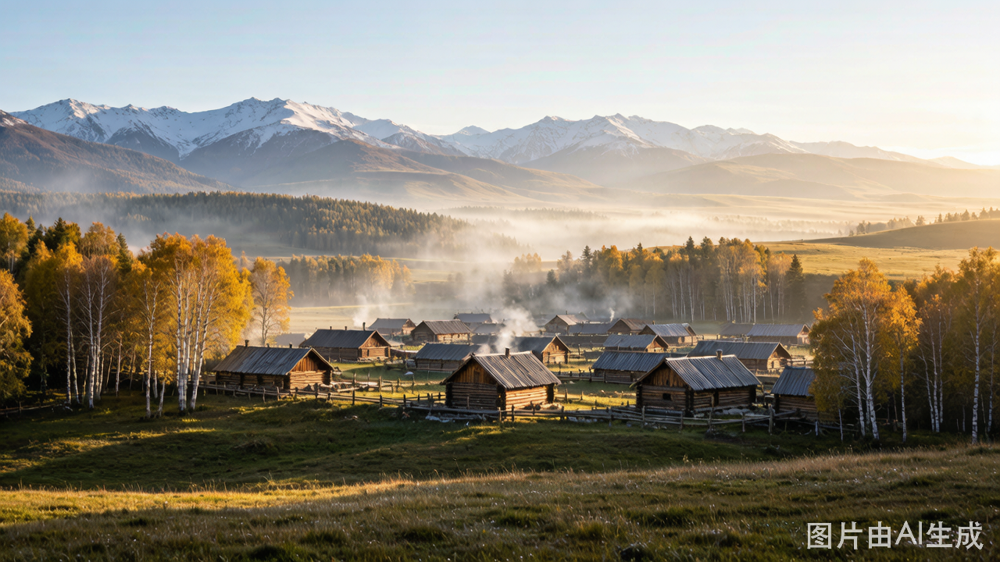
早晨 · 禾木晨雾（必看！！）⭐⭐⭐⭐⭐
这是禾木最核心的体验！早上5:30-6:00起床，上观景台等晨雾。
- 禾木晨：山谷中的晨雾+炊烟+金色阳光+白桦林=人间仙境
- 最佳时间：日出前后（约7:00-8:30），光线最柔和，晨雾最浓
- 观景台：从村里走栈道或坐车上观景台（推荐走上去了慢慢下来），俯瞰整个村落被晨雾环绕
- 带娃：早起宝宝可能不配合，可以一人先上去拍照留影，或者用背带背上观景台
- 国庆注意：10月1日国庆节当天游客可能较多，越早越好！
上午/下午 · 禾木 → 喀纳斯
看完晨雾后，上午出发前往喀纳斯景区——"人间仙境"、"东方瑞士"。
- 路程：仅70km，约1.5-2小时山路（风景很美！）
- 门票+区间车：约230元/人（2日有效）
- 到达后：下午在喀纳斯湖畔漫步，欣赏湖水颜色变化（蓝→绿→青随光线变化）
- 换乘中心：景区交通枢纽，从这里可以去各个景点
- 三湾预告：
- 神仙湾：晨雾最有仙气
- 月亮湾：形似月牙，标志性S弯
- 卧龙湾：河心岛形似恐龙/卧龙
- 晚上宿营：喀纳斯景区停车场或贾登峪附近
喀纳斯
"人间仙境"，变色湖水+神秘水怪传说+神仙湾月亮湾卧龙湾，北疆颜值巅峰之一
全天在喀纳斯！今天不挪车 🎉
今天是北疆环线最核心的一天！全天待在喀纳斯景区，用脚步丈量这片人间仙境。
🌅 上午：观鱼台 —— 俯瞰喀纳斯湖全貌
观鱼台是俯瞰喀纳斯湖的最佳位置，海拔2030米。
- 方式：从换乘中心坐观光车或徒步攀登1068级台阶
- 带娃建议：坐观光车上去（省体力），然后慢慢走下来
- 视野：整个喀纳斯湖尽收眼底，湖水呈现迷人的蓝绿色
- "湖怪"传说：喀纳斯湖水怪是世界未解之谜之一，给孩子讲讲这个神秘故事！
🌊 下午：三湾徒步 —— 神仙湾 → 月亮湾 → 卧龙湾
这是喀纳斯最美的路段！沿喀纳斯河的木栈道从神仙湾一路走到卧龙湾。
- 总长度：约10km栈道步道（可分段乘坐区间车）
- 神仙湾：晨雾最浓最有仙气的地方，草地+河流+树林如诗如画
- 月亮湾：标志性景观！形似月牙的河湾+著名的S弯曲线，必拍机位
- 卧龙湾：河心岛形状像一只卧着的恐龙/龙，很神奇
- 带娃Tips：栈道平坦适合推车；如果宝宝累了可以随时上区间车；带好零食和水
🍂 白桦林 —— 金秋限定景色 ⭐⭐⭐⭐⭐
10月初是白桦林的最佳时节！
- 整片白桦林变成金黄色，阳光透过树叶洒下来绝美
- 喀纳斯景区内有天然白桦林带，不需要额外买票
- 白桦树干银白色+金黄色树叶+蓝天=完美的秋日画卷
- 非常适合拍照！给宝宝也来几张大片
三湾徒步路线
神仙湾晨雾 → 月亮湾S弯 → 卧龙湾卧龙，约10km木栈道，一路风景绝美
观鱼台
1068级台阶登顶（可坐车），俯瞰喀纳斯湖全景+"湖怪"出没地
充分利用景区区间车！三湾之间都有班车连接，不用全程徒步。观鱼台建议坐观光车上、走下来（省力）。多带零食水，景区里物价较高。10月初喀纳斯白天约5-10°C，注意保暖。
上午：离开喀纳斯 → 穿越白桦林带
告别喀纳斯，沿路还能看到大片的白桦林——10月初正是金黄色的最佳观赏期。
- 路线：喀纳斯 → 布尔津(再次经过) → 217国道 → 乌尔禾
- 路上风景：布尔津到乌尔禾的路上有大片野生白桦林和胡杨林，秋天颜色极美
- 如果时间充裕可以在路边免费的白桦林带停车拍照（不需要进收费景区）
下午：乌尔禾魔鬼城 —— 世界魔鬼城 ⭐⭐⭐⭐
乌尔禾魔鬼城（世界魔鬼城）是典型的雅丹地貌，因风蚀作用形成各种奇特造型。
- 门票+区间车：约62元/人（坐小火车游览）
- 著名造型：孔雀迎宾、天安门、泰坦尼克号、七剑下天山拍摄地等
- 游玩方式：坐区间小火车，停靠几个主要观景点下车拍照
- 最佳时间：傍晚时分光影效果最好，夕阳下如同一座座沉默的巨人
- 带娃Tips：坐小火车不累；但风大注意防风保暖；2岁半宝宝会对奇特造型很好奇
晚上：克拉玛依 —— 石油之城
- 克拉玛依因石油而生，是一座现代化的工业城市
- 城市干净整洁，基础设施完善，适合休整补给
- 找安全的停车场或服务区车内宿营
- 为明天的赛里木湖之行做好准备
乌尔禾魔鬼城
"世界魔鬼城"，典型的雅丹地貌，风蚀城堡群壮观震撼，电影《七剑下天山》《卧虎藏龙》取景地
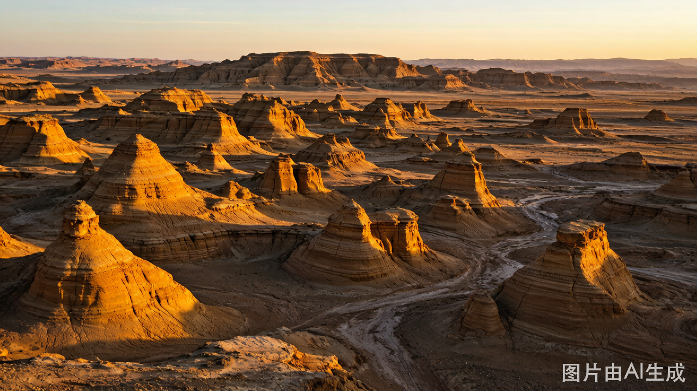
赛里木湖 —— "大西洋最后一滴眼泪" ⭐⭐⭐⭐⭐
下午到达赛里木湖——新疆海拔最高、面积最大的高山湖泊，被称作"大西洋最后一滴眼泪"。这是北疆环线的颜值巅峰！
- 门票：免费！（自2023年起赛里木湖景区免门票，自驾票另计）
- 强烈建议买自驾票！可以开车环湖（约90公里），随时停车拍照，非常适合带娃
- 湖水颜色：随光线和角度变化——蓝、绿、青、紫，每一刻都不同
- 环湖必停点位：
- 亲水滩：走到湖边踩水，湖水冰凉透彻
- 克勒涌珠：泉水上涌形成的气泡景观
- 天鹅乐水：可以看到天鹅（季节性，10月初可能还有）
- 西海草原：花海+雪山背景，超级出片
- 松树头观景台：俯瞰果子沟大桥的最佳位置
- 雪山草地牛羊毡房：湖边是哈萨克牧民的夏季牧场，景色如画
- 住宿选择：景区内有房车营地/指定露营区，可以在车内过夜看星空！
赛里木湖
"大西洋最后一滴眼泪"，雪山湖泊草原完美结合，北疆颜值天花板
果子沟大桥（远眺）
从赛里木湖松树头观景台远眺，果子沟大桥如巨龙盘卧山谷之间，壮观非凡
如果只能选一个地方多待一天，投给赛里木湖！环湖自驾太爽了每个角度都不同。傍晚在湖边看日落晚上看满天繁星第二天早上看日出——绝对值回票价（而且门票还免费！）如果天气好在湖边露营体验更佳。
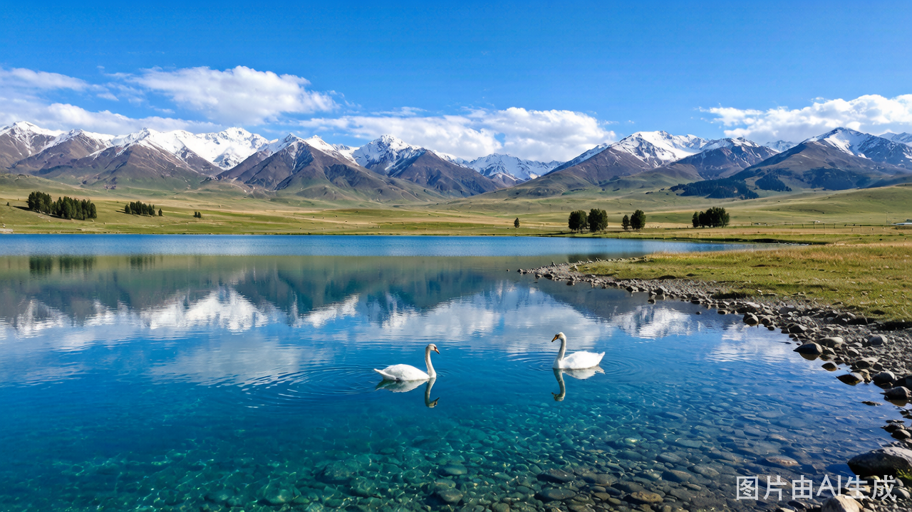
果子沟大桥 —— 新疆第一桥 ⭐⭐⭐⭐⭐
离开赛里木湖向南，首先经过的就是著名的果子沟大桥——新疆公路建设史上的奇迹！
- 壮观程度：穿行在山谷之间，气势磅礴，从远处看如巨龙盘卧山间
- 行车体验：开在大桥上有腾空飞行的感觉，非常刺激
- 最佳拍照点：赛里木湖出口松树头观景台（昨天应该看到了远景），今天可以走上去近距离感受或在桥上停车拍
- 免费打卡！
伊宁市 & 喀赞其民俗区 —— 蓝色之城 ⭐⭐⭐⭐⭐
伊宁市是伊犁哈萨克自治州的首府，一座充满蓝色元素的异域风情城市。
- 喀赞其民俗旅游区：⭐必去！蓝色的房子、彩色的门窗、热情的当地人，像走进摩洛哥或圣托里尼
- 体验项目：坐马车（哈迪克）游览村子，非常有民族特色
- 美食（不可错过！）：
- 手工冰淇淋：比超市的好吃太多！浓稠香甜，孩子超爱
- 马肉纳仁：伊犁特色面食
- 烤包子、手工酸奶：每样都尝尝
- 伊犁河：傍晚可以去河边看日落，当地人在河边放风筝
- 薰衣草田：10月初可能还有晚季品种（霍城附近），如果花期对的话一定要去！紫色花海+远山=绝美
- 带娃：喀赞其很适合遛娃，巷子里走走停停，宝宝会对蓝色房子很好奇；手工冰淇淋绝对是孩子的最爱
果子沟大桥
"新疆第一高桥"，中国国内首座双塔双索面钢桁梁斜拉桥，航拍圣地
喀赞其民俗旅游区
伊宁蓝色童话小镇，维吾尔族传统民居，色彩斑斓如摩洛哥，手工冰淇淋一绝
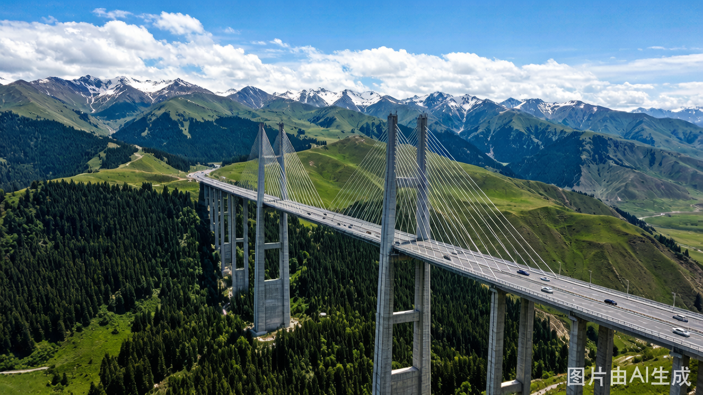
北疆大环线的最后一天游览日！🏁
今天是北疆大环线的最后一个完整游览日！上午在那拉提草原深度游玩，下午开始向东返程方向行驶。
🌿 上午：那拉提草原深度游（3-4小时）⭐⭐⭐⭐⭐
那拉提草原是世界四大草原之一，新疆最著名的草原景区。不同于内蒙古一望无际的平原草原，那拉提是山地草原——有起伏山峦、茂密森林、雪山背景。
- 门票+区间车：空中草原线约135元/人（最经典线路）
- 空中草原（推荐！）：视野开阔，可以看到雪山背景下的草原全景，像瑞士风光
- 体验项目：骑马（哈萨克牧民牵着走，安全）、观光车直达核心区
- 十月的那拉提：草开始泛黄泛绿相间，是另一种苍茫辽阔之美
- 带娃Tips：区间车直达不需要太多步行；草原上跑跑跳跳孩子会很开心；注意防晒和保暖
🛣️ 下午：唐布拉百里画廊（免费风景）→ 开始向东返程
离开那拉提后沿G218向东走一小段——这就是著名的唐布拉百里画廊！
- 免费！G218沿线本身就是一条天然风景画廊，不用进收费景区
- 沿途风景：雪山、草原、河谷、杉树林、毡房牛羊——边开车边看就行
- 找安全的路边停车点拍照即可，不需要专门停留太久（今天要赶路到奎屯）
- 之后转G3012高速正式开始向东返程
🌙 晚上：到达奎屯休息
傍晚/晚上到达奎屯市休息。
- 奎屯是交通枢纽城市，设施完善
- 好好休息！为明天的超级赶路日（1000km！）养精蓄锐
- 加满油、买好干粮和水
那拉提草原
"空中草原"，世界四大草原之一，雪山背景下的高山草甸，哈萨克族夏牧场
唐布拉百里画廊
G218沿线天然风景走廊，雪山草原河谷杉林，免费欣赏不花钱
从D5进入S21开始北疆环线，到今天D12游览完那拉提——北疆8天环线圆满结束！明天起进入返程模式。今天尽量早点到达奎屯休息，明天要开约1000km的超级长途。
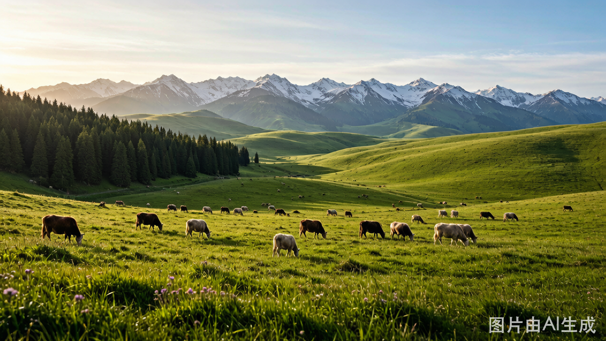
全程G30高速 · 超级赶路日 😅
今天是最累的一天！约1000公里！但坚持过今天，明天就轻松了——D14从张掖到兰州只有500km，中午就能到！
🌙 凌晨出发！建议4:00
- 带宝宝越早出发越好——宝宝在车里睡回笼觉
- 奎屯加满油、检查车况
- 准备好充足的零食、水、干粮
🚗 全程G30路线：奎屯 → ... → 张掖
全程G30连霍高速一路向东：
- 奎屯 → 石河子 → 乌鲁木齐(绕城不停) → 吐鲁番(不停) → 鄯善 → 哈密(第二次经过) → 星星峡(再次出新疆入甘肃) → 瓜州 → 玉门 → 嘉峪关(路过不停车) → 张掖
- 途经景观：再次穿越吐鲁番盆地、哈密戈壁滩、出新疆进入甘肃河西走廊
- 傍晚/深夜到达张掖——终于可以休息了！
💪 赶路生存指南
- 每3小时必须服务区休息：停车让宝宝活动、上厕所、换尿不湿、吃点东西
- 两人轮换驾驶：如果可以的话轮流开，避免疲劳
- 音频娱乐：准备宝宝喜欢的儿歌、故事音频
- 零食大法：足够的零食是带娃长途旅行的核心科技
- 心态调整：今天就是纯赶路，不要有"应该去哪里看看"的念头，目标只有一个——安全到达张掖
① 凌晨出发务必保证前一天睡好；② 不要疲劳驾驶困了就停服务区休息；③ G30路况良好但注意区间测速；④ 再次经过新疆检查站备好身份证；⑤ 出新疆入甘肃的星星峡段注意限速；⑥ 带好足够的水和食物有些路段服务区间隔较远。
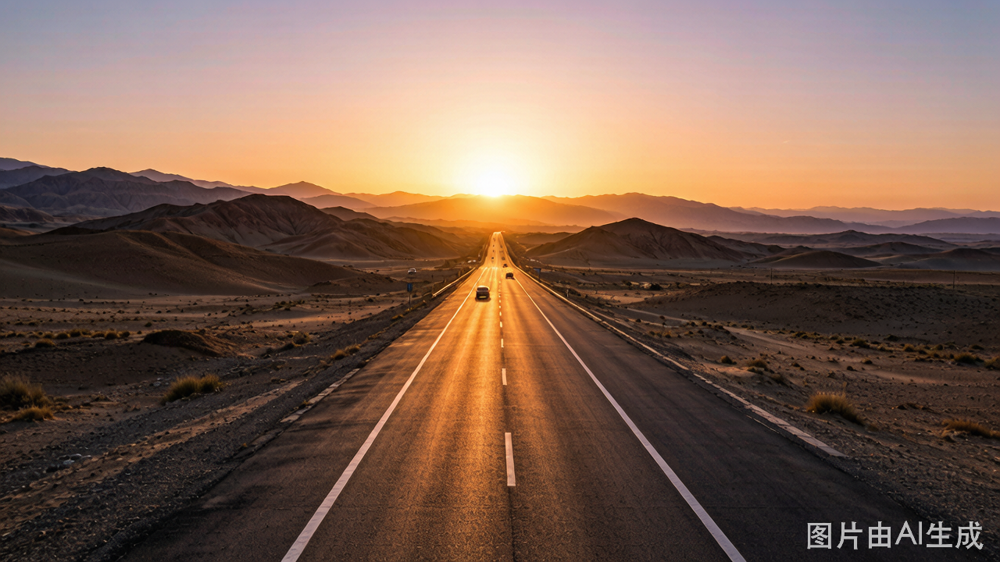
今天非常轻松！！只有500km！🎉
经过昨天1000km的超级赶路，今天终于可以睡个懒觉再慢慢开了！早上7-8点出发，中午前后就能到兰州！
😴 早上7-8点出发（睡懒觉！）
- 经过昨天的超级赶路，今天可以好好休息一下再出发
- 路线：张掖 → 民乐 → 扁都口 → 西宁(绕城) → 海东 → 兰州
- G30连霍高速一路向东南，路况良好
- 中午前后到达兰州！
📦 下午：办理车辆托运手续
到达兰州后第一件事——把车托运回武汉！
- 推荐平台：运车帮、恒运达、鑫邦运车等（提前在网上预约更便宜）
- 费用预估：兰州→武汉约2000～2500元
- 运输时效：一般3-5天到达武汉
- 所需材料：行驶证、身份证、车辆照片
- 注意事项（重要！）：清空车内所有贵重物品、拍照留证（车身外观+内饰）、保留少量油量、取走证件原件、关闭电子设备电源
🏨 晚上：入住中川机场附近酒店
- 办完托运手续后前往中川机场附近入住酒店
- 选有停车场（如需）+有早餐的酒店
- 酒店到机场很近（10-20分钟），明天去机场非常方便
- 晚上可以去吃最后一顿正宗兰州牛肉面 🍜
- 早点休息，明天飞回家！
汽车托运指南
推荐平台：运车帮/恒运达/鑫邦运车；费用2000-2500元；时效3-5天；务必清空贵重物品并拍照留证
因为D13已经从奎屯一口气开到了张掖（1000km），把最难的路程都走完了！D14只需要500km就能到兰州，而且中午就能到——有充足的时间办理托运和找酒店。
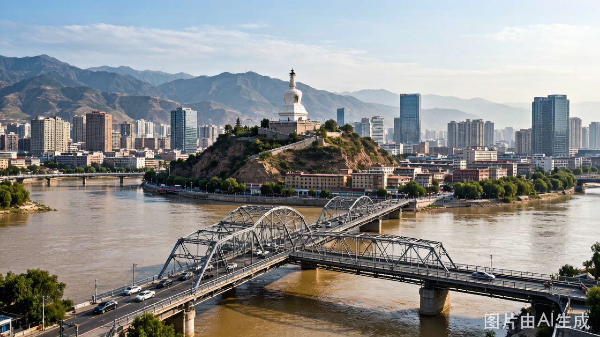
兰州 → 武汉，回家了！🎉
昨天已经办好车辆托运手续、住进中川机场酒店。今天只需轻松地吃完早餐去机场飞回家！
🌅 早餐后退房 → 前往机场
- 从酒店出发前往兰州中川机场T2航站楼
- 酒店到机场很近（10-20分钟车程），非常方便
- 建议提前2小时到达机场办理登机和托运行李
- 带宝宝记得走特殊通道/优先安检
✈️ 航班信息：兰州(LHW) → 武汉(WUH)
- 直飞航班：东航、南航、春秋航空等多班次
- 飞行时间：约2.5-3小时
- 到达：武汉天河机场
- 注意：2岁半宝宝需要购买婴儿票/儿童票，提前确认座位和安全带使用方式
📦 关于你的爱车
- 爱车正在从兰州运往武汉的路上 🚗💨
- 运输时效：一般3-5天后到达武汉
- 托运公司会电话通知你取车
- 取车时检查车辆外观和内饰是否有损伤
- ☐ 托运手续已办理完毕，拿到托运单据（昨天D14已完成）
- ☐ 机票已确认，航班信息已存手机
- ☐ 身份证、户口本（宝宝需要）随身携带
- ☐ 托运行李额度确认（新疆特产买买买之后别超重😄）
贴心提示
带娃自驾特别提醒
- 安全座椅：必须安装并每次出行系好
- 作息规律：尽量保持宝宝的午睡习惯
- 频繁停车：每2-3小时休息一次，让宝宝活动
- 娱乐准备：绘本、玩具、儿歌音频
- 饮食：多备零食、奶粉、辅食
- 衣物：北疆温差大，洋葱式穿衣法
车内过夜装备清单
- 床垫/气垫床：后排座椅放倒后铺设
- 睡袋：建议-10°C温标（北疆夜间冷）
- 遮阳帘/遮光帘：隐私+保温+遮光
- 车载逆变器：给电子设备充电
- 保温壶：热水是刚需
- 简易厨具：卡式炉+锅（偶尔煮面）
- 移动厕所方案：便携马桶或尿袋
衣物装备建议
- 冲锋衣/羽绒服：必备！北疆夜间可降至0°C以下
- 保暖内衣：多层穿搭
- 帽子围巾手套：防风保暖
- 运动鞋+靴子：一双走路一双保暖
- 宝宝衣物：比平时多带2倍，小孩容易脏
- 雨具：轻便雨衣雨伞
药品 & 急救包
- 常用药：感冒药、退烧药、肠胃药、创可贴
- 宝宝专用：体温计、退烧贴、益生菌
- 高原反应：葡萄糖、红景天（预防性服用）
- 外用：碘伏、纱布、驱蚊液、防晒霜
- 其他：晕车药、眼药水、润喉糖
电子设备 & APP
- 导航：腾讯地图（提前下载新疆离线包）
- 订票：各景区官方微信公众号
- 住宿：查找合法驻车点APP
- 摄影：手机+相机+无人机（很多景区禁飞）
- 充电宝：至少2万毫安×2
- 车载充电器：多口Type-C+USB
预算参考（估算）
- 油费：约3500-4000元（6000km × 0.6元/km）
- 过路费：约1500-2000元
- 门票：约3000-4000元（2成人，部分儿童免票）
- 餐饮：约3000-4000元
- 托运费：约2000-2500元
- 机票：约1500-2500元（3人）
- 总计预估：约1.5-2万元